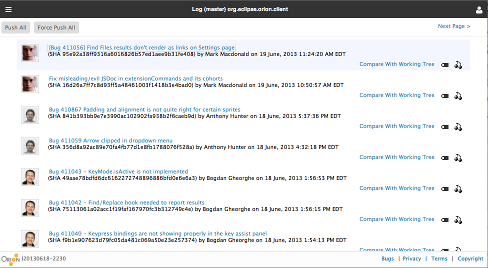
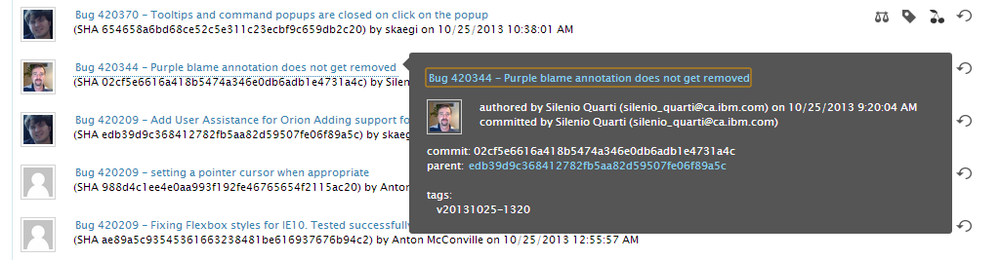

The Git Log page allows you to browse the commit history of a Git repository branch. The page can show all the commits on a given branch, or focus on only the commits that involve changes to a particular file or directory. You can browse both local and remote branches using this page. What you see in this page depends on how you navigated to it.
The breadcrumb in the title area allows you to navigate to the Repository page either on where the log lives or just showing all the repositories list.
For help with common Git tasks see Working with Git.
There are many ways to open the Git Log page:
Once on the Git Log page, you will see a list of commits in chronological order. The title area lets you know what branch and file or directory the page is focused on. In the example below, we are viewing the local branch called master in the repository called OrionClient.

If you are viewing a local branch that is not up to date with its remote tracking branch, a Push All command is available in the toolbar to push your unreleased changes. When viewing a remote branch, Fetch and Merge commands are available in the toolbar to bring remote changes into your local repository and working copy.
Further to the right, there are actions for tagging, cherry-picking and revert individual commits.
You can click on a commit link to open the Git Commit page. Hover on any commit in the list to see a tooltip dialog with detailed information about the commit.

When viewing the Git log for a single file, some additional capabilities are available. Additional commands are available next to each commit. The Open link will open the revision of the file as it appeared in that commit. You can also compare the contents of that commit to the current contents of that file in your working tree. Finally, if you select any two files, a menu containing a Compare With Each Other command appears in the toolbar, to compare the differences in that file between the selected commits.
This document is maintained in a collaborative wiki. If you wish to update or modify this document please visit http://wiki.eclipse.org/Orion/Documentation/User_Guide/Reference/Git_Log_page